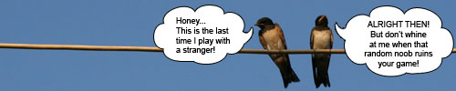

Mixed2on2: QuakeWorld divorces

Luckyshot has decided to restart his former QuakeWorld competition titled “Mixed2on2″. Roughly five years ago when he first organised this competition, it was restricted for Finnish players only and eventually won by Fix and Rampage. This time however, it is open for anyone to sign up. Beware though fellow Transatlantic members of beloved community: HPB times await you!
The basic concept behind this competition is that everyone signs up individually rather than signing up an already existing 2on2-team. Once the signup-phase is completed, Luckyshot will randomly create 32 teams and a standard competition-bracket. This bracket will consist of a winners bracket and a losers bracket, so every player will get to play at least 2 games.
To spice things up even more, each player will get a new mate after every round. So yes, since everyone is free to sign up, you might end up with the biggest noob in QuakeWorld. I know the thought of having to play with a lower-skilled player makes a lot of people out there sweat, but if you happen to embrace randomness, this might be just the thing for you!
Up to this point, 37 players have signed up to the challenge. And if you like what you read above, you should follow this link and sign up too! However, you should make sure you have enough time and go on IRC regularly. Neither Luckyshot, nor anyone else in this tourney would appreciate having to team up with someone who is nowhere to be found.
Perhaps it says somewhere in the rules. But supose your teammate doesnt show up for the game. Who will get thru to the next round? Or is the game played 2v1?